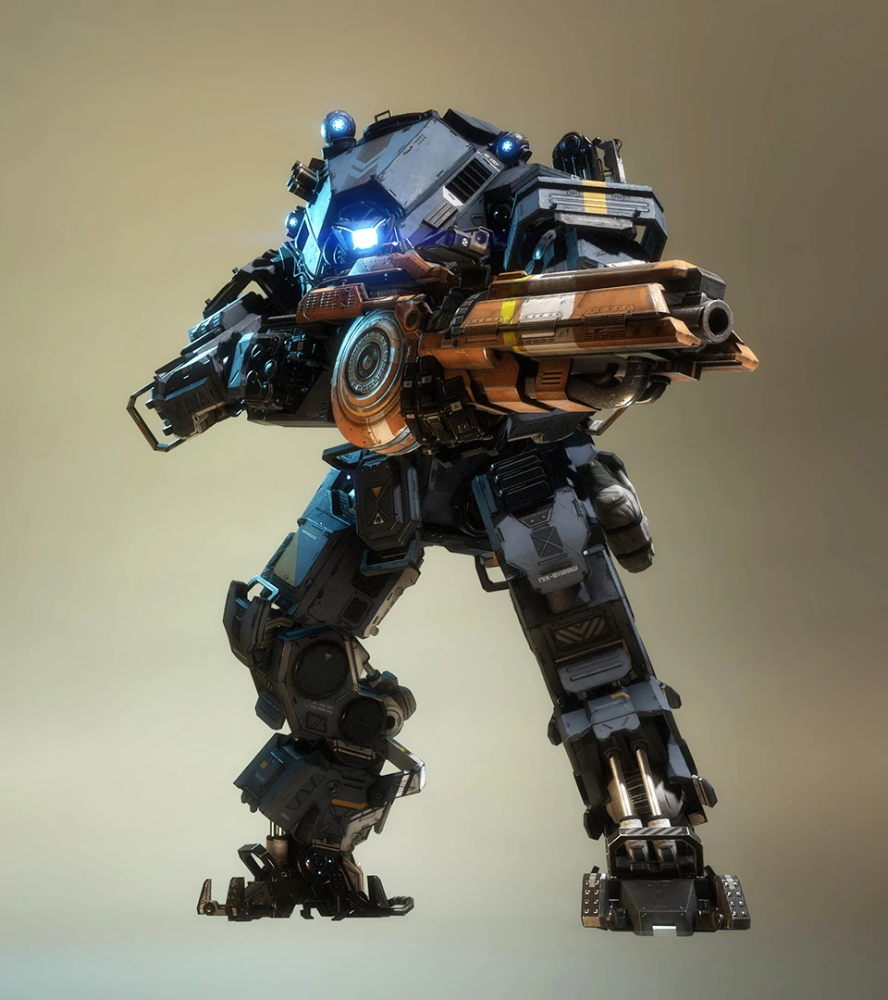

Ion

Az Ion egy sokoldalú, energiaalapú Titán. Lézeres főfegyverével és Vortex Pajzsával képes elnyelni és visszalőni a bejövő lövedékeket. Ideális választás a precíz tűzerő és a védekezés kedvelőinek. Képes erőteljes Lézermagot is bevetni.